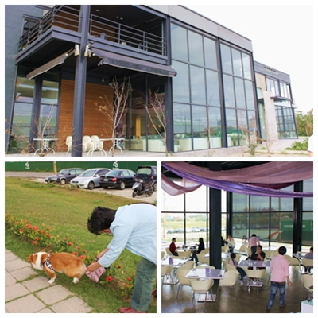
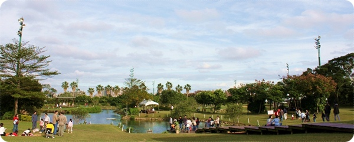
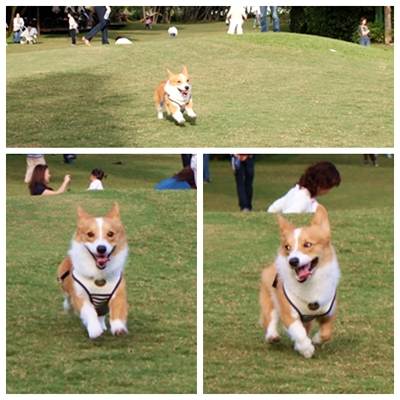
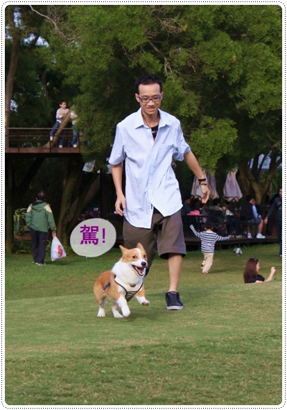
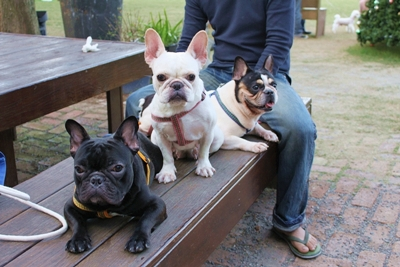
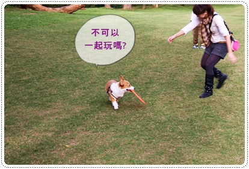
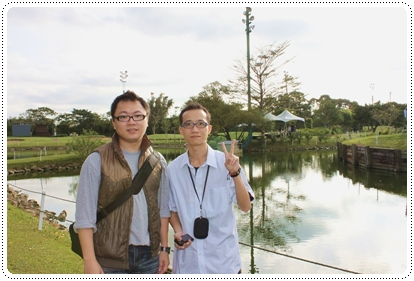
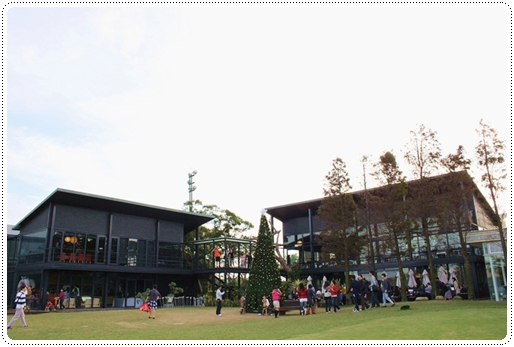
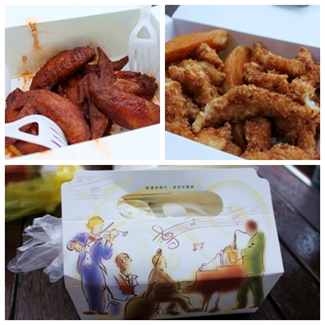
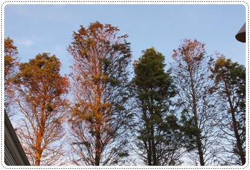

這個週末一早起床噗浪，發現今日沒有謎題可猜 .gif")
K週刊主編一家跑去東台灣旅遊去啦！快回來...XD
結果週末一大早台北就下著雨，所以就決定往南走，選定了中壢綠風草原
前陣子常跑苗粟，突然覺得到中壢真的是小咖耶！

今天我家阿嬤難得被我騙出門，一下車就來個接屎功，
我們家阿嬤可是很得意她可以讓摩卡卡的塞不落地.gif")
不過這裡是那啊！？天兵就天兵一整個走錯間還不自知 = =
進去後問一下服務生草原在那？才發現錯了啦！服務生也很有經驗說常有的事
不過建築物真的有點像而且距離相差不到５０公尺。要去的人要仔細看一下嘍！
=================回歸正途分隔線==================

果然再多開５０公尺轉進個小巷子就真的到了綠風草原餐廳

一進去就看到乾淨寬廣的草坡，據說這裡由高爾夫球瑒改建的，場地真不小耶！
入園門票一個人150元還可抵消費，戶外的位子可以隨便坐，
還看到蠻多人就直接坐在草地上享受大自然的洗禮。

綠風草原也有小小的聖誔節氣氛嘍！小木馬們都載上了可愛的聖誔帽
卡卡難得可以跟阿嬤合照，表情一樣是憨厚的可愛 

擺脫台北的陰雨綿綿，摩卡卡的心情也特別美麗
難得耳朵都直直的豎起來！

這裡聖誕樹好大一顆，今年看到的第一顆。
聖誕節來這裡吃吃喝喝好像也很不賴歐！

全家福，卡卡太high了不受控，所以大家站著拍不想管他了！
沒想到矮冬瓜居然還能入鏡！

high咖一枚，想拍他飛起來的樣子，不過這小子實是跑太慢了 .gif")

起跑跟馬沒兩樣，表情還是超有喜感，不要再當諧星了摩卡！

跟葛哥比賽，卡卡很拼啊！耳朵又再度起豎高高

來這裡的小朋友很多，但家長算很友善惹
這小娃竟然想拿車車嚕卡卡的頭，頭大也不能當停車場啊！

這裡還有個樹屋，抱著胖小子爬高上去還蠻可怕的！差點滑倒
但爬高高看view很不錯！

三隻小法鬥很帥，不過法鬥的臉好嚴肅歐！很不爽的感覺
我一直對著他們三個猛拍照，都覺得等一下會被圍毆！

繞到草皮後方有個水池，倒印在水裡的天空好美！


突然發現旁邊有小朋友在丟飛盤，摩卡卡也想參一咖，
走過去咬了人家的飛盤就想溜，實在是很沒禮貌！
以下這幾張是出自我的手耶～自己覺得還不賴啦！

其實是天氣太好了，怎嘛拍都美！


室內用餐的餐廳，有兩個大區域，但是狗狗當天寵物座位已經客滿只能坐在戶外！
所以我們也沒有特別走進去看看。

阿嬤陪卡卡等餐點，最近很愛玩淺景深，哈哈
這種拍法真的很有fu耶! 青蛙大神請保佑我的摩卡卡健康歐！ 

去的時間是下午茶時間，所以我們只點了小點心吃吃
左上是辣味雞翅６隻，右上是炸魚&薯條組合
雖然價格不便宜不過東西還蠻好吃的！下次去要試一下它的烤雞

等吃吃的小呆瓜

綠風小舖裡面有很多婚禮佈置的小東西，都好精巧可愛
那個小仙人掌我家葛哥覺得很特很想買，回來一直唸唸不忘！

那天很巧遇到唯一一隻小柯基，叫NEMO
會想到海底總動員的小丑魚尼莫，很可愛的名字！
他一進來我就看到他了，因為完全不等麻麻自己跑來跑去的！
柯基真的很不受控耶！哈哈哈


綠風草原真的很棒！是還會想來的一個好地方，看它生意那嘛好就知道了！
雖然一直有聽聞餐點很貴，不過好像不錯吃！下次來一定要試試
同一個週末我隔天剛好有朋友糾又去了陽明山的綠風莊園
不過我還是投了中壢的一票啦！因為.....
這裡有盪秋千可以玩!!!


下篇預告:陽明山綠風莊園